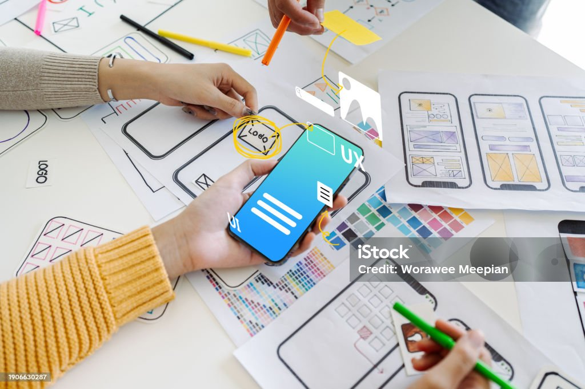

Nos Services
Nous offrons une large gamme de services pour répondre aux besoins de votre entreprise.
Développement Web
- Développement de sites web personnalisés : Création de sites web sur mesure adaptés aux besoins des entreprises.
- Maintenance de site web : Mise à jour et gestion de contenu pour assurer que votre site reste performant et sécurisé.
- SEO (Optimisation pour les moteurs de recherche) : Optimisation des sites pour améliorer leur classement sur les moteurs de recherche.
- Intégration de CMS : Installation et personnalisation de systèmes de gestion de contenu comme WordPress.
Développement d'Applications
- Développement d'applications web : Conception et développement d'applications web interactives et responsives.
- Développement d'applications mobiles : Création d'applications mobiles pour iOS et Android.
- Développement d'applications d'entreprise : Solutions logicielles personnalisées pour automatiser et optimiser les processus métier.

Administration de Bases de Données
- Conception d'applications d'administration de bases de données : Création d'applications pour gérer, analyser et visualiser les données d'entreprise.
- Optimisation des bases de données : Amélioration des performances des bases de données pour une meilleure efficacité.
- Automatisation des processus de base de données : Mise en place de scripts pour automatiser les tâches répétitives.
- Sécurisation des bases de données : Implémentation de mesures de sécurité pour protéger les données sensibles.
Design
- Conception d'interface utilisateur (UI) : Création de designs intuitifs et attrayants pour les applications web et mobiles.
- Design graphique : Création de logos, brochures, bannières, et supports visuels pour les entreprises.
- Design UX : Conception d'expériences utilisateur fluides et optimisées pour les utilisateurs finaux.
- Design de marques (Branding) : Création d'identités de marque complètes, de la conception du logo aux éléments graphiques.